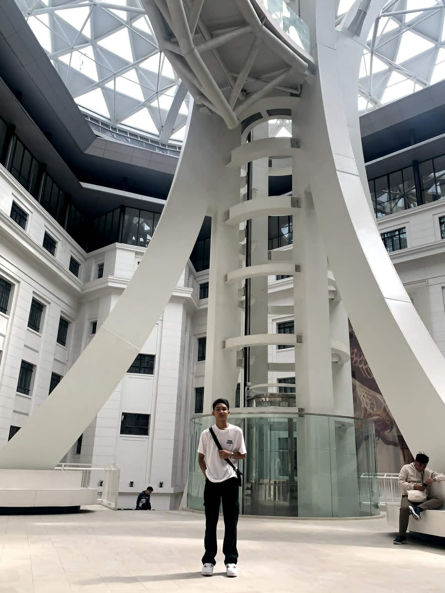

2nd Year IT Student | Aspiring Front-End Developer
Built for the road, stuck behind the code
I'm currently taking up Information Technology at CvSU-Imus and continuously exploring web development and design. I enjoy creating simple and interactive websites while improving my coding skills.
My goals as a developer are to build user-friendly applications, contribute to open-source projects, and eventually work in a collaborative environment where I can learn and grow with other developers.
Aside from coding, I also enjoy motorcycles and late-night rides. It helps me clear my mind, stay inspired, and recharge after long hours of studying.